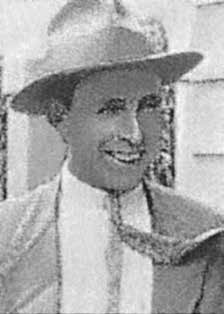

Carlos
Schirmer
CIRCUNSTÂNCIAS DA MORTE
Carlos Schirmer morreu no dia 1o de maio de 1964, em decorrência de ação perpetrada por agentes do Estado.
Na manhã do dia 1o, Carlos foi procurado por policiais enviados pelo coronel Melquíades Líbano Horto, chefe do Departamento de Vigilância Social da Secretaria de Segurança Pública, que pretendiam levá-lo à delegacia para prestar esclarecimentos sobre suas atividades políticas. Carlos recusou-se a acompanhá-los. O coronel Melquíades mandou, então, que os policiais retornassem e levassem Carlos à força. Diante da nova recusa, ordenou reforço e, acompanhando os policiais, dirigiu-se à casa da vítima.
De acordo com o jornal O Diário, de 3 de maio de 1964, e com o relatório do Inquérito Policial, além do coronel Melquíades, participaram dessa ação o investigador Carlos Expedito de Freitas e o sargento Geraldo Alves de Oliveira. Os agentes de segurança invadiram a casa. Carlos reagiu à prisão e feriu levemente dois policiais. Em seguida, refugiou-se em um barracão que, segundo sua filha, funcionava como uma oficina. Nesse instante, o responsável pela operação, o coronel Melquíades, determinou que se atirasse na direção do local onde Carlos estava. Logo depois, os policiais jogaram bombas de efeito moral. Durante a confusão que se instaurou na ocasião, Carlos se escondeu em um forro de sua residência, sendo descoberto posteriormente pelos policiais.
Segundo a versão oficial, apresentada no relatório do coronel Melquíades, Carlos teria sentido os efeitos do gás e descido do local em que estava. Nesse instante, utilizando-se de uma carabina calibre 22, teria atirado contra si próprio, na altura do queixo. Conforme depoimentos de pessoas que testemunharam os fatos, Carlos, com um ferimento no pescoço, foi jogado pelos policiais em uma caminhonete. Foi inicialmente levado ao Hospital Nossa Senhora Aparecida, em Divinópolis e, posteriormente, ao Hospital Felício Roxo, em Belo Horizonte, para poder ser operado, mas não resistiu aos ferimentos e morreu.
O relator do caso junto à CEMDP, em sua apreciação, solicitou a realização de perícia técnica. De acordo com a análise, o laudo de necropsia descreveu duas lesões, sendo a primeira decorrente de disparo de arma de fogo. Segundo o perito, o tiro teria sido disparado a distância e não por meio de arma próxima ao corpo. A segunda lesão se deu em função da saída do projétil. Tal análise apontou para uma contradição entre a descrição do laudo de necropsia e o relatório do coronel responsável pelo inquérito, pois não seria possível, com uma carabina calibre 22, Carlos desferir um tiro contra o próprio queixo sem que a arma estivesse encostada ou a curta distância, pois seu braço não alcançaria o gatilho.
Neste sentido, para o relator do caso na CEMDP, o militante morreu por omissão de socorro ou por socorro intencionalmente inadequado. Carlos foi enterrado no cemitério de Carmo de Cajuru, em Minas Gerais.
Carlos Schirmer died on May 1, 1964, as a result of actions perpetrated by State agents.
On the morning of the 1st, Carlos was sought out by police officers sent by Colonel Melquíades Virgínia Horto, head of the Social Surveillance Department of the Public Security Secretariat, who intended to take him to the police station to provide clarification on his political activities. Carlos refused to accompany them. Colonel Melquíades then ordered the police to return and take Carlos by force. Faced with the new refusal, he ordered reinforcements and, following the police officers, went to the victim's house.
According to the newspaper O Diário, dated May 3, 1964, and the report of the Police Inquiry, in addition to Colonel Melquíades, investigator Carlos Expedito de Freitas and Sergeant Geraldo Alves de Oliveira participated in this action. Security agents invaded the house. Carlos reacted to the arrest and slightly injured two police officers. He then took refuge in a shed that, according to his daughter, functioned as a workshop. At that moment, the person responsible for the operation, Colonel Melquíades, decided to throw himself in the direction of where Carlos was. Soon after, the police threw stun bombs. During the confusion that ensued at the time, Carlos hid in a crawl space in his residence, and was later discovered by the police.
According to the official version, presented in Colonel Melquíades' report, Carlos would have felt the effects of the gas and left the place where he was. At that moment, using a 22 caliber rifle, he allegedly shot himself, at chin height. According to statements from people who witnessed the events, Carlos, with a wound to his neck, was thrown by the police into a truck. He was initially taken to Hospital Nossa Senhora Aparecida, in Divinópolis and, later, to Hospital Felício Roxo, in Belo Horizonte, to undergo surgery, but he could not resist his injuries and died.
The case's rapporteur at CEMDP, in his assessment, requested technical expertise. According to the analysis, the autopsy report described two injuries, the first resulting from a gunshot. According to the expert, the shot had been fired from a distance and not from a weapon close to the body. The second injury occurred due to the exit of the projectile. This analysis pointed to a contradiction between the description in the autopsy report and the report of the colonel responsible for the investigation, as it would not be possible, with a 22 caliber rifle, for Carlos to fire a shot at his own chin without the gun being touching or at close range, as his arm would not reach the trigger.
In this sense, for the CEMDP case rapporteur, the militant died due to failure to provide assistance or intentionally inadequate assistance. Carlos was buried in the Carmo de Cajuru cemetery, in Minas Gerais.
Carlos Schirmer falleció el 1 de mayo de 1964, como consecuencia de acciones perpetradas por agentes del Estado.
El día 1 por la mañana, Carlos fue buscado por policías enviados por el coronel Melquíades Virgínia Horto, jefa del Departamento de Vigilancia Social de la Secretaría de Seguridad Pública, quienes pretendían llevarlo a la comisaría para aclarar sus actividades políticas. Carlos se negó a acompañarlos. Entonces el coronel Melquíades ordenó a la policía que regresara y se llevara a Carlos por la fuerza. Ante la nueva negativa, ordenó refuerzos y, siguiendo a los policías, se dirigió a la casa de la víctima.
Según el diario O Diário, de 3 de mayo de 1964, y el informe de la Investigación Policial, además del coronel Melquíades, participaron en esta acción el investigador Carlos Expedito de Freitas y el sargento Geraldo Alves de Oliveira. Agentes de seguridad invadieron la casa. Carlos reaccionó a la detención e hirió levemente a dos policías. Luego se refugió en un cobertizo que, según su hija, funcionaba como taller. En ese momento, el responsable del operativo, coronel Melquíades, decidió arrojarse en dirección a donde se encontraba Carlos. Poco después, la policía arrojó bombas paralizantes. Durante la confusión que se produjo en ese momento, Carlos se escondió en un espacio reducido de su residencia y luego fue descubierto por la policía.
Según la versión oficial, presentada en el informe del coronel Melquíades, Carlos habría sentido los efectos del gas y habría abandonado el lugar donde se encontraba. En ese momento, utilizando un rifle calibre 22, presuntamente se disparó, a la altura del mentón. Según declaraciones de personas que presenciaron los hechos, Carlos, con una herida en el cuello, fue arrojado por la policía a una camioneta. Inicialmente fue trasladado al Hospital Nossa Senhora Aparecida, en Divinópolis, y, posteriormente, al Hospital Felício Roxo, en Belo Horizonte, para ser operado, pero no pudo resistir las heridas y murió.
El relator del caso en el CEMDP, en su evaluación, solicitó pericia técnica. Según el análisis, el informe de la autopsia describió dos lesiones, la primera por arma de fuego. Según el perito, el disparo se realizó a distancia y no con un arma cercana al cuerpo. La segunda herida se produjo por la salida del proyectil. Este análisis señaló una contradicción entre la descripción del informe de la autopsia y el informe del coronel responsable de la investigación, ya que no sería posible que Carlos, con un rifle calibre 22, disparara a su propio mentón sin que el arma estuviera en contacto o a corta distancia, ya que su brazo no alcanzaría el gatillo.
En este sentido, para el relator del caso del CEMDP, el militante murió por falta de asistencia o por asistencia intencionalmente inadecuada. Carlos fue enterrado en el cementerio Carmo de Cajuru, en Minas Gerais.